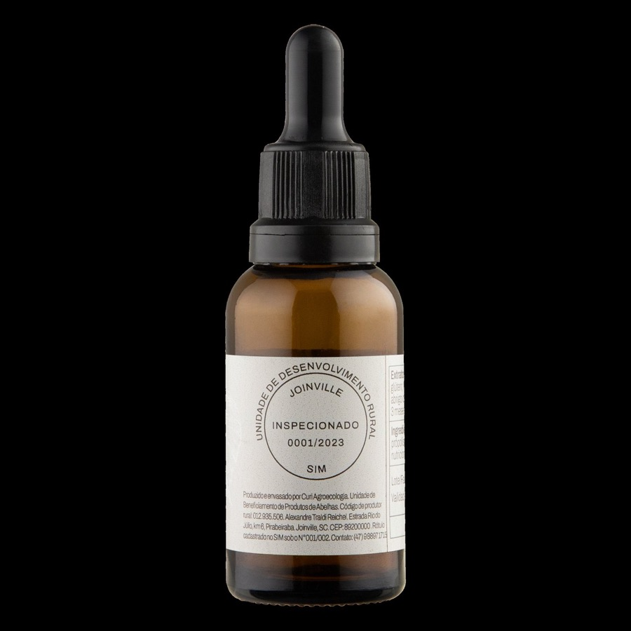
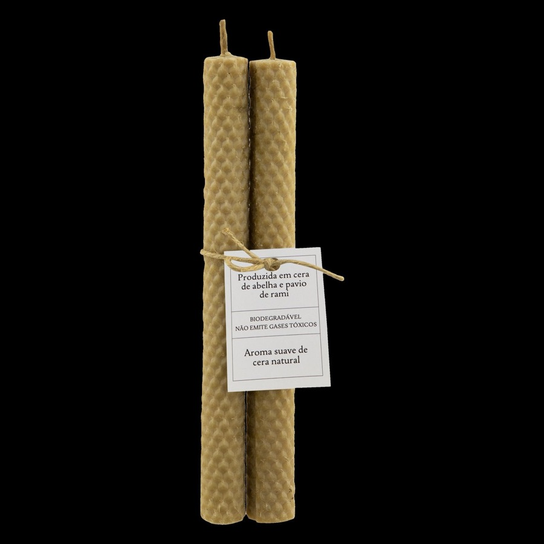

em breve
Própolis: a farmácia da colmeia
Como as abelhas produzem própolis — e como a gente transforma em extrato.
O que está acontecendo na mata, no apiário e na varanda — na velocidade das estações, não a do feed.

Como as abelhas produzem própolis — e como a gente transforma em extrato.

O que acontece com a cera depois da colheita do mel.

Por que cada safra de mel tem um sabor — e o que floresce em cada estação.
Os primeiros textos estão sendo escritos. Enquanto isso, o diário acontece em tempo real no Instagram:
Seguir @curi.agroecologia